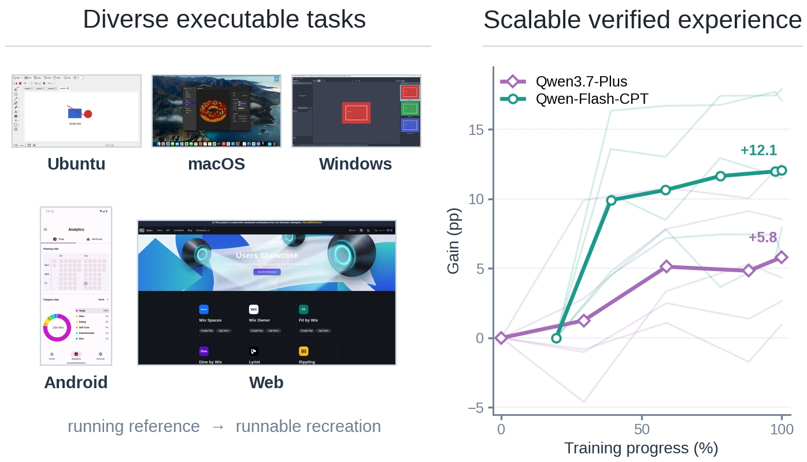

I am an M.S. student in Artificial Intelligence at Tsinghua University. Previously, I received my B.Eng. in Artificial Intelligence from Dalian University of Technology.
My research focuses on building Universal Digital Agents (UDAs), with an emphasis on Computer-Use Agents. I study how agents can understand and operate across digital environments, including graphical interfaces, terminals, and code. I am particularly interested in long-horizon reasoning, post-training, and Agentic RL for UDAs.
I aim to make computer use a core capability of frontier models and to bring UDAs into everyday life. Computers serve as the core medium for these agents. By operating digital systems and connecting them with real-world tasks, they can improve accessibility, extend human capabilities, and create meaningful impact in the physical world. I believe UDAs represent an important path toward AGI.
I am currently a research intern with the Qwen Team at Alibaba, where I am advised by Que Shen. Previously, I interned at Huawei Multimodal Lab and collaborated remotely with Microsoft Research Asia.
If you would like to talk about research or life, feel free to reach out. I am open to research collaborations and opportunities.
News
- 2026.09 Released RecreationWorld, scalable and verifiable environments for hybrid Computer-Use Agents.
- 2026.08 WeaveBench and ST-Lite accepted by EMNLP 2026.
- LoopX reached #1 on GitHub Trending on August 5.
- 2026.07 Started a research internship with the Qwen Team at Alibaba.
- 2026.06 Released WeaveBench, a benchmark for hybrid-interface Computer-Use Agents.
- 2026.04 Started a research internship at Huawei Multimodal Lab.
- 2026.02 Released ST-Lite for efficient long-horizon GUI agents.
- 2026.01 Began a remote research collaboration with Microsoft Research Asia.
Research
Toward universal agents that can perceive, reason, and act across diverse digital interfaces.
Universal Digital Agents
Research spanning GUI interaction, terminal and tool use, code execution, long-horizon reasoning, evaluation, and efficient deployment.

View full figure ↗RecreationWorld: Scalable and Verifiable Environments for Hybrid Computer-Use Agents
Contributor Technical Report · 2026
A framework that turns software recreation into scalable training environments with verifiable rewards, alongside a 250-task benchmark across Ubuntu, macOS, Windows, Android, and Web.

WeaveBench: A Long-Horizon, Real-World Benchmark for Computer-Use Agents with Hybrid Interfaces
First Author EMNLP 2026
A benchmark of 114 real-world tasks across eight domains that require agents to interleave GUI observation with CLI and code execution; the best evaluated system reaches only 41.2% success.

First Author EMNLP 2026
A training-free KV cache compression method tailored to GUI interaction traces, matching or exceeding Full Cache accuracy at a 20% budget while delivering up to 2.35× decoding speedup.

GUIPruner: Spatio-Temporal Token Pruning for Efficient High-Resolution GUI Agents
First Author arXiv 2026
A training-free framework that combines temporal-adaptive resolution with structure-aware visual-token pruning, achieving a 3.4× FLOPs reduction and a 3.3× vision-encoding speedup while retaining over 94% of the original performance.
Open Source
Membership · Long-Horizon Agent Control Plane
#1 on GitHub Trending · Aug 5, 2026
An open-source framework for long-horizon agents that preserves task state across sessions and coordinates work across Codex, Claude Code, and other agent tools. It supports recovery, handoffs, and human oversight so agents can continue complex work reliably.
Experience

Research Intern · Base Model Team · Advised by Que Shen
Research on foundation models, multimodal reasoning, and generalist agents for complex digital environments.

Research Intern · Base Model Team
Multimodal foundation-model research, scalable training, and research prototyping.

Research Collaboration · Remote
Hybrid-interface Computer-Use Agents and the WeaveBench benchmark.
Skills
Education
-
 Tsinghua University — M.S. in Artificial Intelligence Present
Tsinghua University — M.S. in Artificial Intelligence Present
-
 Dalian University of Technology — B.Eng. in Artificial Intelligence
Dalian University of Technology — B.Eng. in Artificial Intelligence